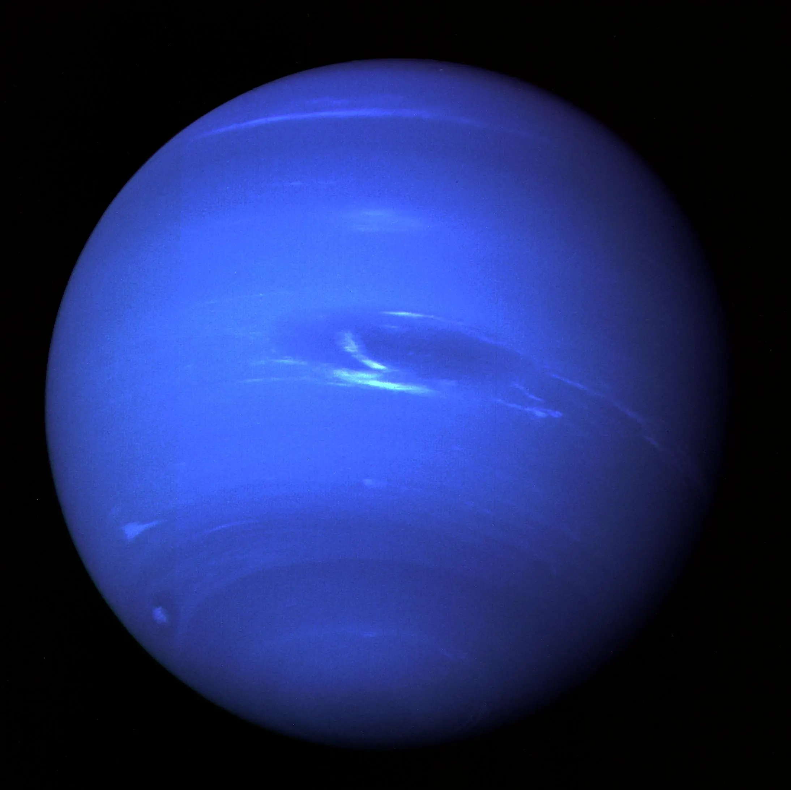
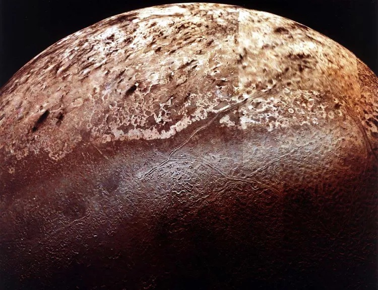

• Type : Planète de glace (géante)
• Diamètre : 49 244 km (environ 3,9 fois celui de la Terre)
• Distance du Soleil : 4,5 milliards de km (30,1 unités astronomiques)
• Durée d'un jour : 16 heures et 6 minutes
• Durée d'une année : 165 années terrestres
• Nombre de satellites : 14 lunes confirmées
• Température : -218°C (au sommet des nuages)
• Atmosphère : Principalement hydrogène (80%), hélium (19%) et méthane (1%)
Neptune est la huitième et dernière planète du système solaire, située à une distance moyenne de 4,5 milliards de kilomètres du Soleil. Son nom vient du dieu romain de la mer, choisi en raison de sa couleur bleu profond. Neptune est la première planète à avoir été découverte par calcul mathématique plutôt que par observation directe : sa position a été prédite par Urbain Le Verrier en 1846, basée sur les perturbations de l'orbite d'Uranus, avant d'être observée par Johann Galle la même année.
Comme Uranus, Neptune est classée comme une "géante de glace". Bien qu'elle soit composée principalement d'hydrogène et d'hélium, elle contient une proportion plus importante d'éléments plus lourds que Jupiter et Saturne, notamment de l'eau, de l'ammoniac et du méthane sous forme de glace.
Neptune est connue pour ses vents violents, les plus rapides du système solaire. Ces vents peuvent atteindre des vitesses stupéfiantes de 2 100 km/h, soit près de deux fois la vitesse du son sur Terre. Ces tempêtes gigantesques traversent l'atmosphère de la planète, créant et dissipant de grandes taches sombres similaires à la Grande Tache Rouge de Jupiter, mais beaucoup plus éphémères.
Lors du survol de Voyager 2 en 1989, une caractéristique atmosphérique dominante était la Grande Tache Sombre, une tempête anticyclonique de la taille de la Terre. Lorsque le télescope spatial Hubble a observé Neptune quelques années plus tard, cette tache avait disparu, remplacée par d'autres formations similaires ailleurs sur la planète, démontrant la nature dynamique de l'atmosphère neptunienne.
La couleur bleu profond caractéristique de Neptune est due à la présence de méthane dans son atmosphère, qui absorbe la lumière rouge et réfléchit la lumière bleue. Cependant, Neptune est d'un bleu plus intense qu'Uranus, malgré une concentration similaire de méthane, ce qui suggère qu'un autre composant, non encore identifié, contribue à sa coloration.
Sous son atmosphère, Neptune possède probablement un manteau composé d'eau, d'ammoniac et de méthane "glacés" (bien que ces substances soient en fait des fluides chauds et denses en raison des pressions extrêmes). Au centre se trouve un noyau solide d'environ 1,5 fois la masse de la Terre, composé de roches et de glaces.
Neptune possède un système d'anneaux ténu, composé de cinq anneaux principaux. Ces anneaux sont inhabituels car ils contiennent des "arcs" - des sections plus denses que le reste de l'anneau. Ces arcs sont instables et leur persistance reste un mystère pour les astronomes.
La planète compte 14 lunes connues, dont la plus grande est Triton, qui représente plus de 99% de la masse en orbite autour de Neptune. Triton est unique à plusieurs égards : elle orbite dans le sens opposé à la rotation de Neptune (orbite rétrograde), suggérant qu'elle a été capturée plutôt que formée avec la planète. De plus, Triton est l'un des rares corps du système solaire géologiquement actifs, avec des geysers d'azote observés à sa surface.
Neptune n'a été visitée qu'une seule fois par une sonde spatiale : Voyager 2, qui a survolé la planète en août 1989. Cette brève rencontre a fourni presque toutes nos connaissances détaillées sur la planète, ses anneaux et ses lunes. Voyager 2 a découvert six nouvelles lunes, confirmé l'existence des anneaux de Neptune, et observé la Grande Tache Sombre ainsi que d'autres caractéristiques atmosphériques.
Depuis ce survol, l'observation de Neptune se fait principalement par des télescopes terrestres et spatiaux comme Hubble. Aucune autre mission dédiée n'a été envoyée vers cette planète lointaine, bien que plusieurs concepts de missions aient été proposés pour l'avenir.
Neptune reste l'une des planètes les moins étudiées de notre système solaire, gardant encore de nombreux mystères à résoudre concernant sa structure interne, ses tempêtes atmosphériques dynamiques, et l'origine et l'évolution de son système de lunes unique.

Image de Neptune prise par la sonde Voyager 2 lors de son survol en 1989, montrant la Grande Tache Sombre

Neptune photographiée par le télescope spatial Hubble, montrant des tempêtes et des nuages dans son atmosphère

Triton, la plus grande lune de Neptune, photographiée par Voyager 2, montrant sa surface glacée et géologiquement active
Chez Cosmos Explorer, nous proposons plusieurs façons de découvrir et d'explorer la mystérieuse planète Neptune :
• Observation astronomique : Lors de nos soirées d'observation spéciales, nous utilisons nos télescopes les plus puissants pour vous montrer Neptune, qui apparaît comme un petit disque bleuâtre.
• Exploration virtuelle : Notre simulateur de réalité virtuelle vous permet de "plonger" dans l'atmosphère tumultueuse de Neptune et d'explorer ses lunes fascinantes, notamment Triton.
• Exposition "Aux confins du système solaire" : Découvrez notre exposition dédiée aux planètes externes, avec une section spéciale sur Neptune et ses caractéristiques uniques.
• Conférences thématiques : Assistez à nos présentations sur Neptune, ses tempêtes extrêmes et les défis que pose l'exploration des confins du système solaire.
Pour plus d'informations sur nos programmes d'exploration de Neptune, consultez notre page d'exploration ou contactez-nous.